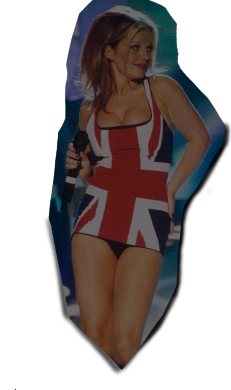
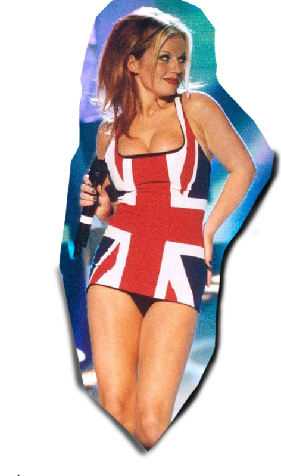
This union jack dress is one of the most iconic clothing pieces from the Spice Girls'
career as a band. Worn by Ginger Spice at the 1997 Brit awards. It is SO 90's and SO spice girls!
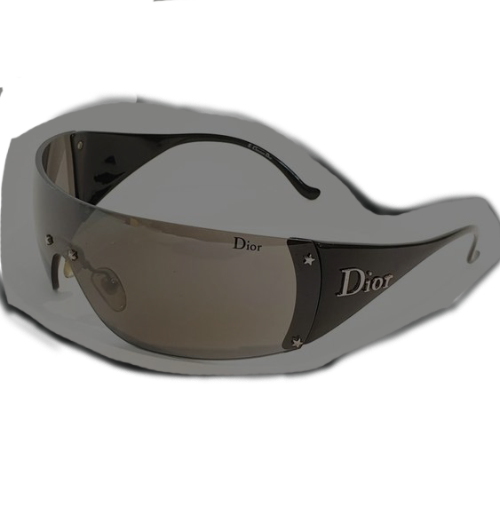
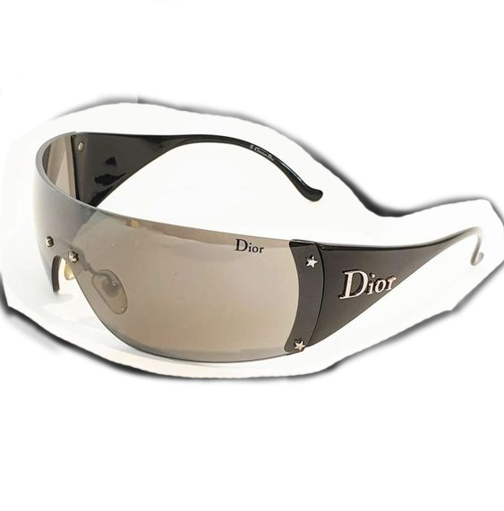
You can't have a 90s outfit without a pair of sunglasses to accesorize.
Accesories are very important to complete a look, and sunglasses create the perfect moody persona.
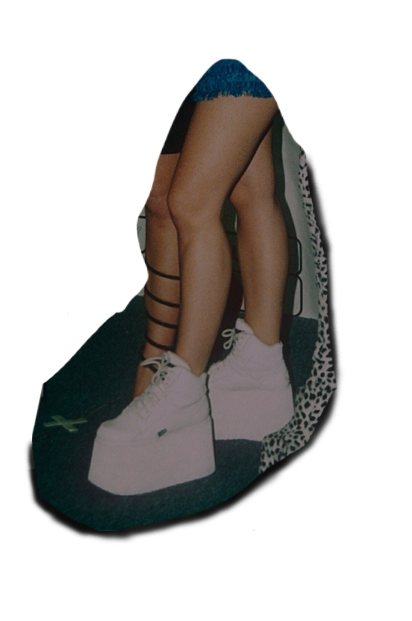
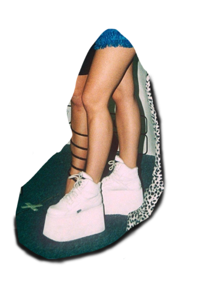
The Spice Girls almost always had some height on them, thanks to platform shoes. Check out brands such as Buffalo London or Sketchers. The chunkier the shoes, the better.
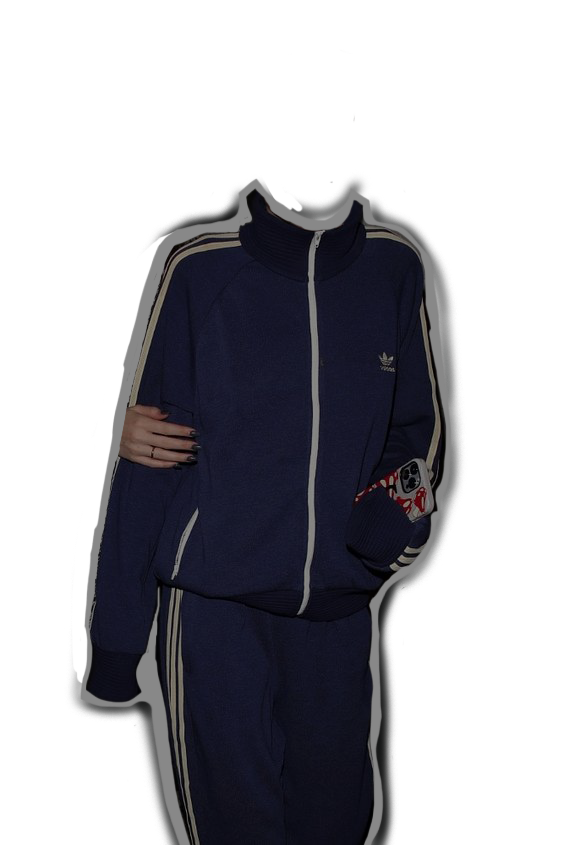
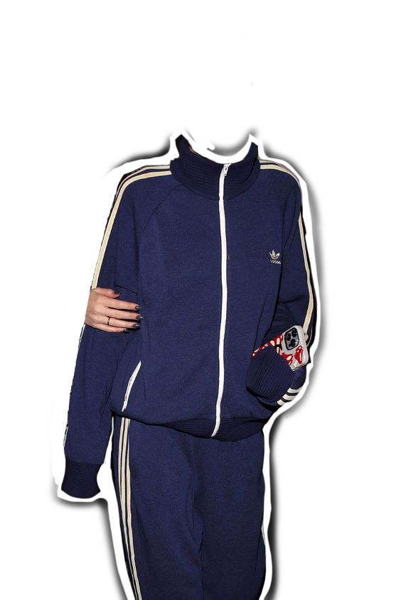
Looking for something comfortable and cute? Copy Sporty Spice's go-to look: the tracksuit. Adidas or Nike tracksuits were very stylish,or even opt for
a more 2000's style with Juicy Couture.
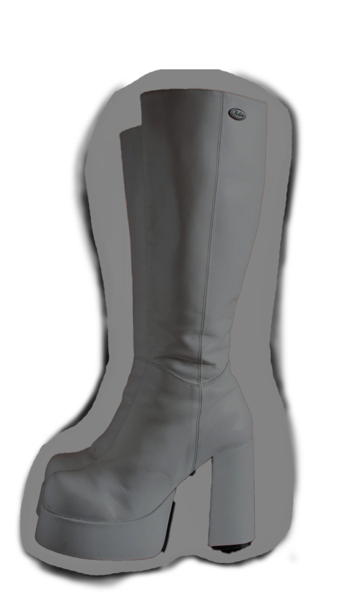
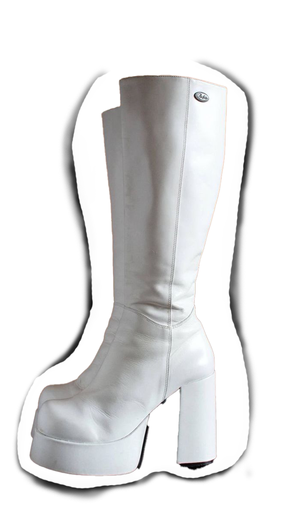
Knee high boots are another shoe choice that give height but also elevate an outfit.
Leather, black, white, red, or even bedazzled knee high boots are seen on the Spice Girls.
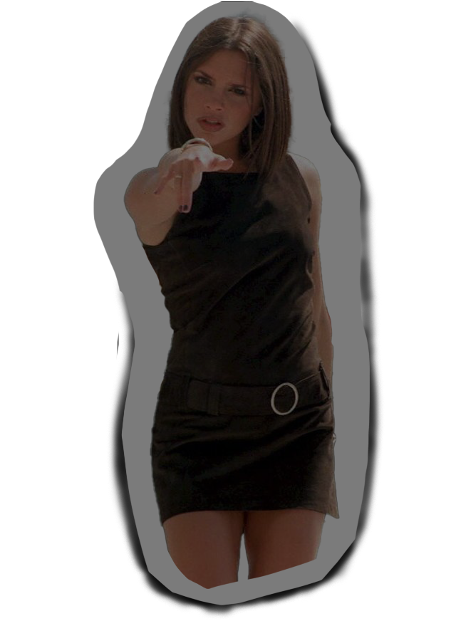
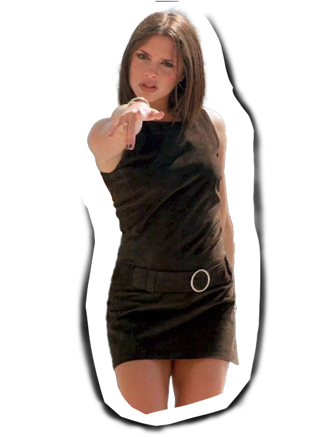
Mini dresses are timeless. Posh spice is known for her chic black mini dress, but mini dresses come in all different styles.
Pair it with knee high boots and you are ready for the runway or the bar!
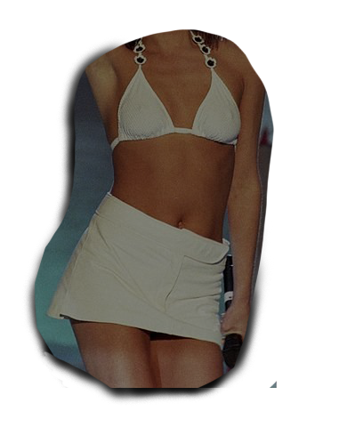
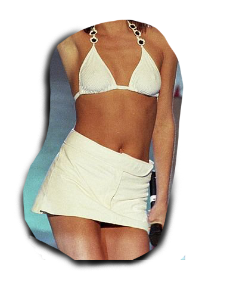
On the 'mini' trend, skirts are perfect to wear for any outfit and any occasion. Pleated, denim, leather, crochet, etc mini skirts were very popular in 90's fashion.
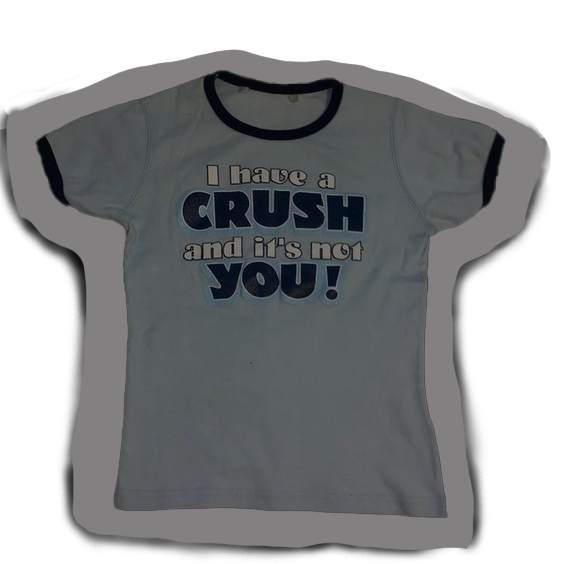
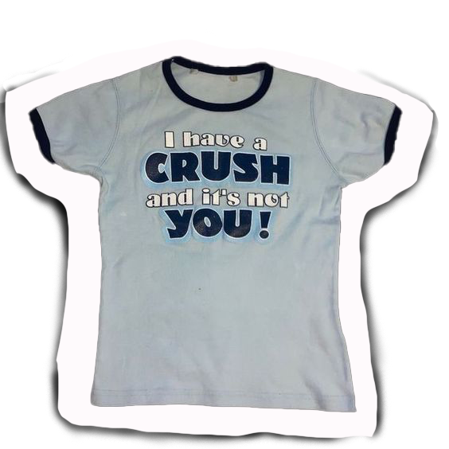
Not baby spice, baby tee! Baby tees are a cute way to wear a regular t-shirt. They fit tight and look great with low rise bottoms.
Often, the girl group rocked graphic tees with cute sayings such as "Girl power".
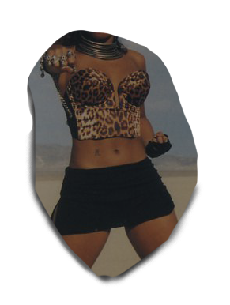
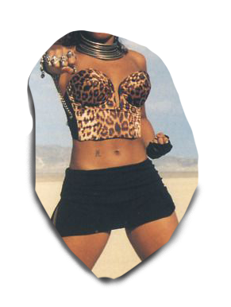
In the 90's, cheetah print was considered a neutral. And as far as the Spice Girls were concerned, cheetah print was a must wear.
Inspiration: Scary Spice's cheetah print top in the 'Say You'll Be There' music video from 1996.